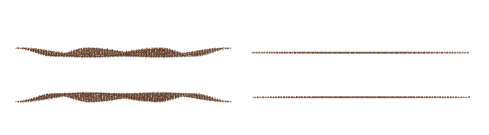

Advanced
Corrugation
When the TBG rotation angle is less than 2 degrees, the influence of lattice relaxation will become more and more significant, especially out of plane deformation, which can also be called corrugation. According to Phys. Rev. X 8, 031087
where
and
in which \(d_{AA}=3.6 \mathring {\mathrm A}\), \(d_{AB}=3.35 \mathring {\mathrm A}\), and \(a=1.42 \mathring {\mathrm A}\) is the bond length of graphene.
The code is as follows:
def corrugation(points, b_vector):
def find_nearest_reference_vector(points, reference_points):
distances = np.linalg.norm(points[:, np.newaxis, :]
- reference_points, axis=2)
min_indices = np.argmin(distances, axis=1)
nearest_vec = points - reference_points[min_indices]
return nearest_vec
def compute_dot_products(b_vector):
theta = 120 * np.pi / 180 # 120 degree to radian
def get_rotation_matrix(theta):
rotation_matrix = np.array([[np.cos(theta), -np.sin(theta)],
[np.sin(theta), np.cos(theta)]])
return rotation_matrix
G1 = b_vector[0]
rotation_matrix = get_rotation_matrix(theta)
G2 = np.dot(rotation_matrix, G1)
G3 = np.dot(rotation_matrix, G2)
return G1, G2, G3
target_aa = np.array([0, 0])
daa = 3.60
dab = 3.35
d0 = 1/3*(daa + 2*dab)
d1 = 1/9*(daa - dab)
G1, G2, G3 = compute_dot_products(b_vector)
reference_points = np.array([target_aa,
target_aa+cell_info[1],
target_aa+cell_info[2],
target_aa+cell_info[1]+cell_info[2]])
distances_vec = find_nearest_reference_vector(points, reference_points)
d_corrug = d0 + 2*d1*(np.cos(np.dot(distances_vec, G1))
+ np.cos(np.dot(distances_vec, G2))
+ np.cos(np.dot(distances_vec, G3)))
return d_corrug
plt.figure()
top_layer = np.vstack((can[3][:,0:2], can[4][:,0:2]))
a_vector = np.array([cell_info[1], cell_info[2]]).T
b_vector = 2*np.pi*np.linalg.inv(a_vector)
d_corrugation = corrugation(top_layer, b_vector)
# POSCAR with corrugation correction
l1a[:,2] = 10 - d_corrugation[:l2a[:,2].shape[0]]/2
l1b[:,2] = 10 - d_corrugation[l2a[:,2].shape[0]:]/2
l2a[:,2] = 10 + d_corrugation[:l2a[:,2].shape[0]]/2
l2b[:,2] = 10 + d_corrugation[l2a[:,2].shape[0]:]/2
poscar_generator = POSCARGenerator(atomO, atomA, atomB, atomC, can,
name='TBG', twist_angle=angle_dgr,
stack_conf='AA', z_height=9)
poscar_generator.generate_POSCAR(atom_type=['C'])
When we output the structure that takes corrugation into account, we will see the left figure below (We have enlarged the amplitude of corrugation to better observe its effects.), and the structure that does not consider this effect will be the right figure below.
{kind=link}
Electric field
The effect of the electric field is reflected in the onsite term.
We can first establish the original hamiltonian,
and then use the onsite_e_field method.
The first parameter is the number of atoms in the sublattice in one layer.
The second parameter represents that there are two sublattice in one layer,
because the potential in the same layer is the same,
the third parameter represents the value of the onsite energy in each layer.
From the example below, one can see that the onsite energy in the bottom layer is 0,
and the onsite energy in the upper layer is \(0.01 eV/\mathring {\mathrm A}\).
tb_model_instance = TBModel(atomO, atomB, atomA, atomC, kx=kx, ky=ky, sp_zm=0, b_mag=0, beta_d=0, strain_m=1)
# basic hamiltonian matrix
hamiltonian, hopping_data = tb_model_instance.finalize_ham(hopping_list=True)
# onsite
onsite_part = tb_model_instance.onsite_e_field(len(can[1]), 2, [0, 0.01])
hamiltonian += onsite_part
Twisted double bilayer graphene
To create twisted double bilayer graphene (TDBG) in TBMoST, users only need to add two additional layers of atomic information to create the structure:
n = 6
m = 7
nm = (m**2+n**2+4*m*n)/(2*(m**2+n**2+m*n))
t1 = np.arccos(nm) #twisted angle (arc)
angle_dgr = round((t1/np.pi)*180,2) #twisted angle (degree)
print('twisted angle: %s°'%(angle_dgr))
stack_conf = 'ABAB' # stacking configuration
material_name = 'TDBG'
c = 3**(1/2)
d = 1.42 #A
ny = 60 #number of vector for y direction
nx = ny*2 #number of vector for x direction
# Define the size and range of the lattice
lattice_a1 = np.array([c*d,0]) #translational vector in x direction for 4-atom basis
lattice_a2 = np.array([0,3*d]) #translational vector in y direction for 4-atom basis
x_range = np.arange(-nx, nx) * lattice_a1[0]
y_range = np.arange(-ny, ny) * lattice_a2[1]
tw = TwistedLayer(d)
# layer 1 and 2
tbg1a = tw.add_layer('Base', rotation_angle=t1, select_sublattice='A')
tbg1b = tw.add_layer('Base', rotation_angle=t1, select_sublattice='B')
tbg2a = tw.add_layer('AB', rotation_angle=t1, select_sublattice='A')
tbg2b = tw.add_layer('AB', rotation_angle=t1, select_sublattice='B')
# layer 3 and 4
tbg3a = tw.add_layer('AA', rotation_angle=-t1, select_sublattice='A')
tbg3b = tw.add_layer('AA', rotation_angle=-t1, select_sublattice='B')
tbg4a = tw.add_layer('AB', rotation_angle=-t1, select_sublattice='A')
tbg4b = tw.add_layer('AB', rotation_angle=-t1, select_sublattice='B')
# Find the coincident atoms
rot_layer1 = np.concatenate((tbg1a, tbg1b))
rot_layer2 = np.concatenate((tbg3a, tbg3b))
coincident_12 = tw.find_coincident_atoms(rot_layer1, rot_layer2)
# SupercellFinder
finder = SupercellFinder(coincident_12)
finder.find_vertices()
atomO, atomA, atomB, atomC = finder.get_vertices()
plotter.plot_unitcell(atomO, atomB, atomA, atomC, lw=2)
# class instantiation
count_atm = AtomCounter(atomO, atomB, atomA, atomC)
# layer 1 and 2
l1a = count_atm.count_atom_num(tbg1a, stack_conf='AA', sublattice_type='A', h=10)
l1b = count_atm.count_atom_num(tbg1b, stack_conf='AA', sublattice_type='B', h=10)
l2a = count_atm.count_atom_num(tbg2a, stack_conf='AB', sublattice_type='A', h=13.35)
l2b = count_atm.count_atom_num(tbg2b, stack_conf='AB', sublattice_type='B', h=13.35)
# layer 3 and 4
l3a = count_atm.count_atom_num(tbg3a, stack_conf='AA', sublattice_type='A', h=16.70)
l3b = count_atm.count_atom_num(tbg3b, stack_conf='AA', sublattice_type='B', h=16.70)
l4a = count_atm.count_atom_num(tbg4a, stack_conf='AB', sublattice_type='A', h=20.05)
l4b = count_atm.count_atom_num(tbg4b, stack_conf='AB', sublattice_type='B', h=20.05)
can = count_atm.get_can(l1a,l1b,l2a,l2b,l3a,l3b,l4a,l4b)
cell_info = count_atm.cell_info()
poscar_generator = POSCARGenerator(atomO, atomA, atomB, atomC, can,
name=material_name, twist_angle=angle_dgr,
stack_conf=stack_conf, z_height=5)
# output the structure
poscar_generator.generate_POSCAR(atom_type=['C'])
Twisted double trilayer graphene
Only the code that is different from TDBG is listed here:
tw = TwistedLayer(d)
# layer 1, 2 and 3
tbg1a = tw.add_layer('Base', rotation_angle=t1, select_sublattice='A')
tbg1b = tw.add_layer('Base', rotation_angle=t1, select_sublattice='B')
tbg2a = tw.add_layer('AB', rotation_angle=t1, select_sublattice='A')
tbg2b = tw.add_layer('AB', rotation_angle=t1, select_sublattice='B')
tbg3a = tw.add_layer('ABC', rotation_angle=t1, select_sublattice='A')
tbg3b = tw.add_layer('ABC', rotation_angle=t1, select_sublattice='B')
# layer 4, 5 and 6
tbg4a = tw.add_layer('AA', rotation_angle=-t1, select_sublattice='A')
tbg4b = tw.add_layer('AA', rotation_angle=-t1, select_sublattice='B')
tbg4a = tw.add_layer('AB', rotation_angle=-t1, select_sublattice='A')
tbg4b = tw.add_layer('AB', rotation_angle=-t1, select_sublattice='B')
tbg4a = tw.add_layer('ABC', rotation_angle=-t1, select_sublattice='A')
tbg4b = tw.add_layer('ABC', rotation_angle=-t1, select_sublattice='B')
# Find the coincident atoms
rot_layer1 = np.concatenate((tbg1a, tbg1b))
rot_layer2 = np.concatenate((tbg4a, tbg4b))
coincident_12 = tw.find_coincident_atoms(rot_layer1, rot_layer2)
# class instantiation
count_atm = AtomCounter(atomO, atomB, atomA, atomC)
# layer 1, 2 and 3
l1a = count_atm.count_atom_num(tbg1a, stack_conf='AA', sublattice_type='A', h=10)
l1b = count_atm.count_atom_num(tbg1b, stack_conf='AA', sublattice_type='B', h=10)
l2a = count_atm.count_atom_num(tbg2a, stack_conf='AB', sublattice_type='A', h=13.35)
l2b = count_atm.count_atom_num(tbg2b, stack_conf='AB', sublattice_type='B', h=13.35)
l3a = count_atm.count_atom_num(tbg3a, stack_conf='ABC', sublattice_type='A', h=16.70)
l3b = count_atm.count_atom_num(tbg3b, stack_conf='ABC', sublattice_type='B', h=16.70)
# layer 4, 5 and 6
l4a = count_atm.count_atom_num(tbg4a, stack_conf='AA', sublattice_type='A', h=20.05)
l4b = count_atm.count_atom_num(tbg4b, stack_conf='AA', sublattice_type='B', h=20.05)
l5a = count_atm.count_atom_num(tbg4a, stack_conf='AB', sublattice_type='A', h=23.40)
l5b = count_atm.count_atom_num(tbg4b, stack_conf='AB', sublattice_type='B', h=23.40)
l6a = count_atm.count_atom_num(tbg4a, stack_conf='ABC', sublattice_type='A', h=26.75)
l6b = count_atm.count_atom_num(tbg4b, stack_conf='ABC', sublattice_type='B', h=26.75)